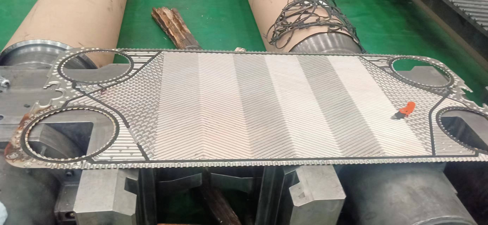
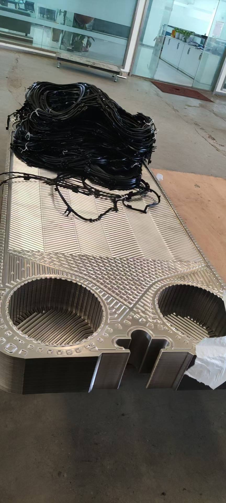

GEA Plate Heat Exchanger Model Guide
About GEA
GEA represents German industrial technology at its finest. Their plate heat exchangers are renowned for precision German manufacturing and outstanding engineering quality. GEA's product line covers the full spectrum from compact to ultra-large industrial heat exchangers.

Main Model Series
1. VT Series (Standard)
VT04, VT10, VT20, VT20P, VT40, VT40P, VT40M, VT80(L), VT80M, VT130
The VT Series represents GEA's standard frame-type plate heat exchangers. The number after VT indicates the plate connection size — larger numbers mean higher processing capacity.
GEA plate heat exchanger product photo
2. VT Large Series
VT402, VT405, VT405P, VT805, VT1306, VT2508
The VT Large Series is designed for ultra-high flow industrial applications, with single units capable of handling thousands of cubic meters per hour.
3. NT Series (High Efficiency)
NT50M, NT50T, NT50X, NT100T, NT100M, NT100X, NT150S, NT150L, NT250S, NT250L, NT250M, NT350S, NT350M
The NT Series features optimized plate corrugation design for higher heat transfer coefficients and lower pressure drop — GEA's premium high-efficiency line.

GEA plate heat exchanger product photo
4. Others
N40, NF350, NT500T, FA157, FA161, FA184, FA192, CT187, CT193, LWC100T
FA Series serves food-grade applications, CT Series offers compact design, and LWC Series provides low-water-consumption condensers.
Selection Recommendations
When selecting a GEA plate heat exchanger, consider the following factors:
- Flow Rate & Heat Load: Choose the appropriate model tier based on processing capacity and heat exchange requirements
- Media Characteristics: Select corresponding plate materials (316L, titanium alloy, etc.) for corrosive media
- Installation Space: Choose compact or standard models based on site constraints
- Maintenance Convenience: Consider disassembly, cleaning frequency, and operational space
We recommend consulting GEA or their authorized distributors before selection for the latest technical specifications and selection support.
Summary
GEA offers a comprehensive range of plate heat exchanger models from micro to large industrial applications. The models listed in this article serve as a quick reference. Actual projects require detailed selection calculations based on specific operating conditions. For spare parts procurement or model replacement, please provide the original nameplate information, and we will quickly match the corresponding product for you.